CLASSIFIED — LEVEL 4
ACTIVE
夜梟部隊
Night Owl Unit
Unit Briefing
部隊簡介
DOC-NOW-001
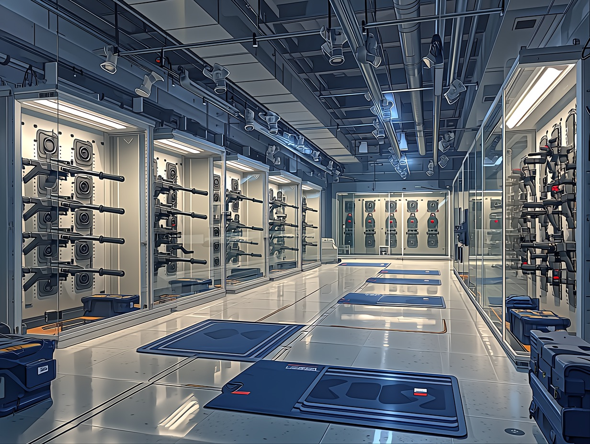
夜梟部隊（ Night Owl Unit ）
隸屬於國土安全局特殊戰術執行處，為國家最高層級之直屬作戰單位，
對外以「跨國安保顧問公司」名義於市中心 T Building 掛牌運作，
實則繞過常規法律體系，專責執行境內外高風險滲透、反恐、情報瓦解、人質救援，及各類不宜公開之「黑色任務」。
部隊成員由司令部從特種作戰司令部中直接提拔，
所有成員均通過 Level 4 以上之最高等級心理抗壓與體能極限評估，並接受專業的戰術、情報分析、語言、駭客等多領域訓練。
他們是城市光鮮表象下的英雄，在法律與道德的灰色地帶穿梭。
而在那些沒有任務的夜晚，他們也只是普通人。
或許，在遇見某個人之後，他們才知道自己還有什麼值得守護。
Unit Data
部隊資料
DOC-NOW-001-A
隸屬
國土安全局 — 特殊戰術執行處
代號
Night Owl
編制
現役 16 人 ／ 離隊 1 人 (狀態：監控中)
機密等級
Level 4 — 最高機密
成立年份
1972 年，確切日期列為機密
總部
T-Building
任務範圍
境內外滲透、反恐、情報蒐集、高價值目標追蹤
裝備配給
獨立武器庫、直升機、全環境戰術套裝、獨立戰術中心、高規格醫療支援
口號
The night ends, the Owl remains.
Unit History
部隊歷史
DOC-NOW-003
以下為部隊成立至今的重要事件紀錄，僅供 Level 4 以上人員閱覽。
xxxx
· ??
· ??
收編萌寵
不明動物因緣際會出現在部隊，引起一連串烏龍事件
2023
· 08
· 08
外部紛爭
與三角洲部隊友誼交流，中士里歐在會場上與對方大打出手，副隊長凱恩遭受波及
2022
· 12
· 12
凱恩成為副隊長
凱恩卸下醫官職位，替補副隊長位置，負責戰術統籌等事宜
2022
· 07
· 07
席奧離隊
副隊長席奧申請離隊，原因██████████
2022
· 06
· 06
代號「撒哈拉」
部隊執行境外救援與反恐任務，因指揮失誤導致小隊數人死傷
2022
· 03
· 03
代號「黑羽」
部隊執行境外高風險任務，目標與詳情列為最高機密，僅傑克握有完整資料
2021
· 11
· 11
里歐入隊
中士里歐因實戰經驗豐富，在隊長傑克引薦下加入
2021
· 11
· 11
席奧獲權成為副隊長
中尉席奧與隊長執行邊境行動中成功撤離小隊，接受表揚成為副隊長
2021
· 01
· 01
席奧入隊
中尉席奧透過特殊管道加入組織
2020
· 07
· 07
傑克入隊
上尉傑克被招募，因行動表現卓越，在同年12月破例成為隊長
2018
· 08
· 08
招募醫官
部隊首次招募醫官、少尉凱恩入隊，提升戰場醫療支援能力
1999
· 05
· 05
總部成立
國土安全局大規模投資，總部T-Building成立
1989
· 02
· 02
隸屬變更
部隊轉歸於國土安全局，成立特殊戰術執行處
1972
· 01
· 01
部隊成立
夜梟部隊正式由特種作戰司令部授權成立
T-Building
部隊總部
DOC-NOW-002
總部坐落於市中心，目前境內、境外設有數處分支據點。還有一些屬於隊員們的秘密基地。
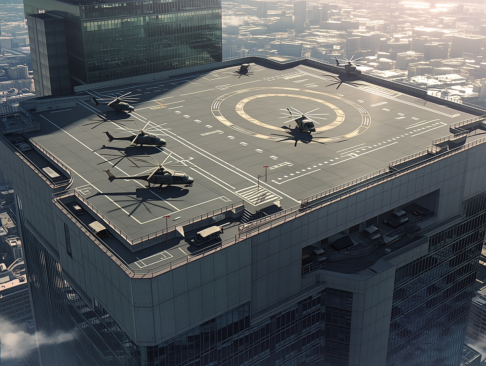
供任務用直升機起降。平時以偽裝網覆蓋，從地面不易察覺。緊急撤離時的第一優先集結點。
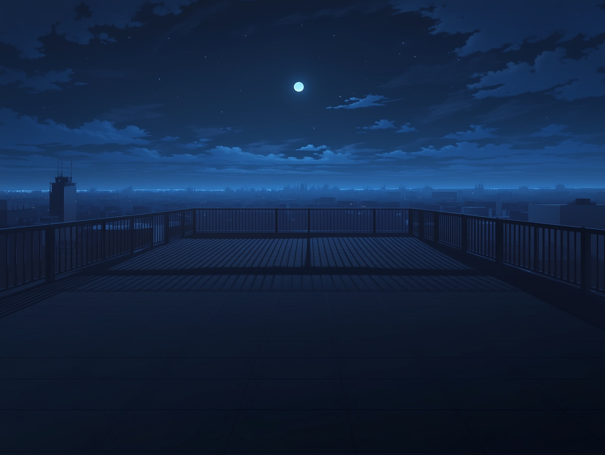
夜景俯瞰城市繁燈，天氣好時能看見星星。席奧有時候會在這裡，思考著什麼。
連接建築內部的垂直撤離通道，可直通 B1 地下停車場。平時上鎖，需生物辨識才可開啟。
即時掌握全球任務動態的核心樞紐。多面牆顯示器同步播送情報，24 小時有人駐守。
傑克在這裡做的每一個決定，下面沒有人知道。
傑克在這裡做的每一個決定，下面沒有人知道。
所有任務出發前的簡報都在這裡進行。牆面為全幅投影螢幕，僅限部隊成員與直屬長官進入。
任務的前一晚，這個房間永遠是最安靜的地方。
任務的前一晚，這個房間永遠是最安靜的地方。
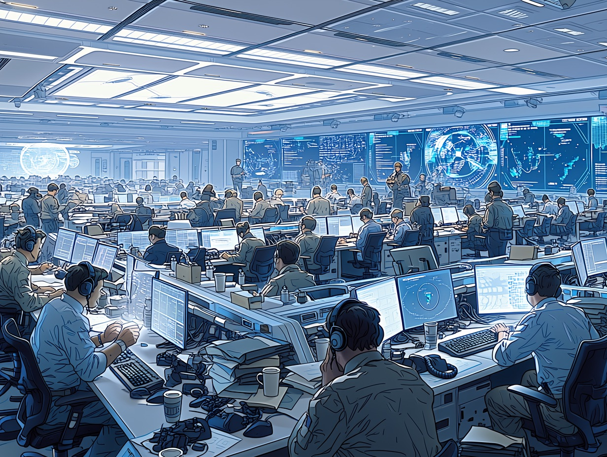
情報人員常駐於此，負責蒐集、比對、分析各方資訊（aka輪班星人QQ）。
凱恩偶爾會在這裡待到天亮。
凱恩偶爾會在這裡待到天亮。
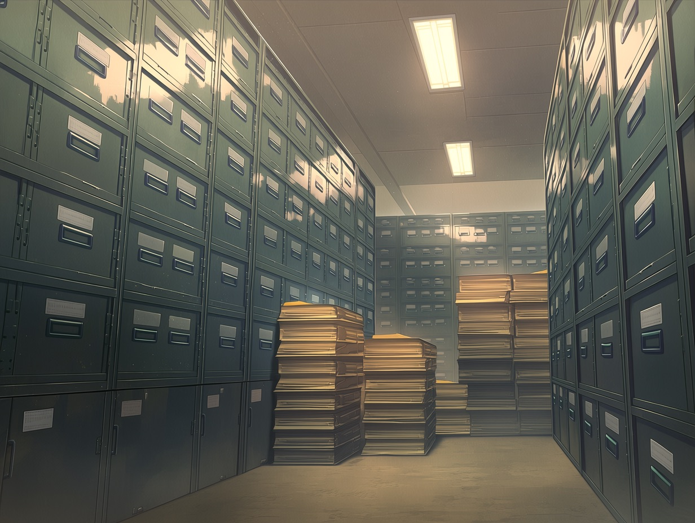
歷史悠久的區域，存放所有紙本機密文件與任務紀錄。
進入需雙重身份驗證，不得攜帶任何電子裝置，據說連傑克也只有部分檔案的閱覽權限。
進入需雙重身份驗證，不得攜帶任何電子裝置，據說連傑克也只有部分檔案的閱覽權限。
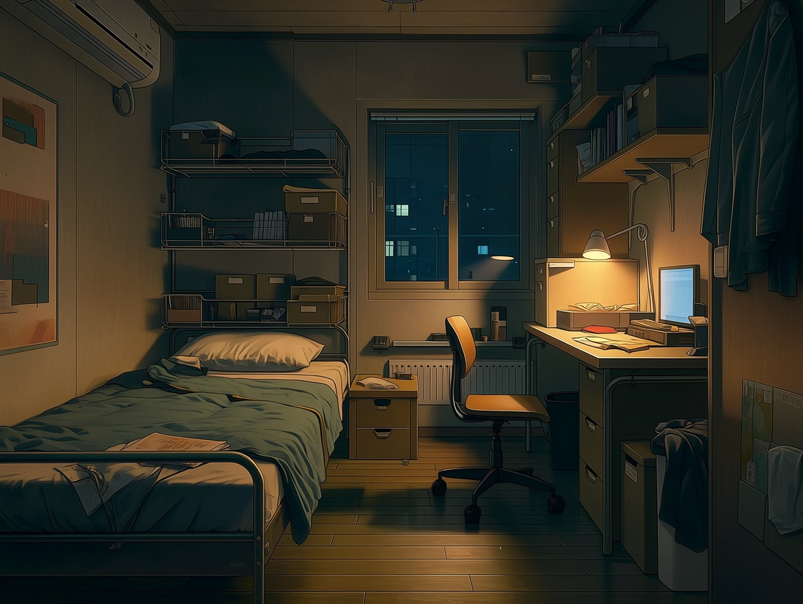
每位隊員各有一間，菜雞住這種破房間是不成文的規定，高階級的隊員幾乎都有額外的私人住宅。
房間裡的東西是這棟樓裡唯一屬於自己的東西，大家都心照不宣不去碰。
凱恩的房間幾乎沒有任何私人物品，里歐的則亂到沒有地方落腳。
房間裡的東西是這棟樓裡唯一屬於自己的東西，大家都心照不宣不去碰。
凱恩的房間幾乎沒有任何私人物品，里歐的則亂到沒有地方落腳。
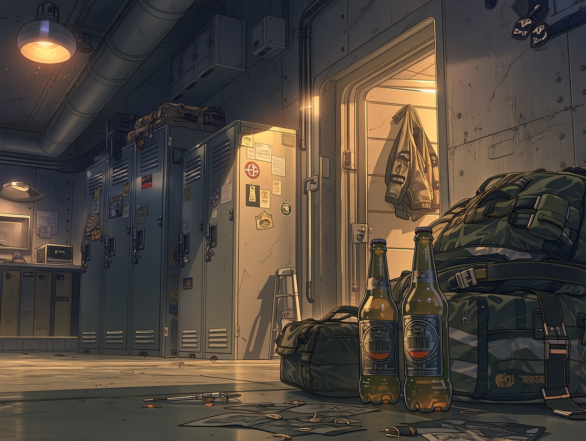
此為舊更衣室，隔壁新的更衣室較為明亮舒適，附設盥洗空間。
照片裡不知道是誰的背包和酒瓶，這樣會被罵的...
照片裡不知道是誰的背包和酒瓶，這樣會被罵的...
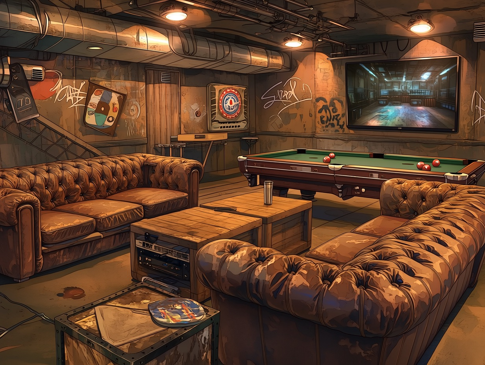
沙發、撞球桌、飛鏢靶、大螢幕電視...應有盡有。
牆上有彈痕、酒漬和各種亂畫的塗鴉，是夜梟「歷史」的見證。
其實傑克曾出於私慾在旁邊安排了更新、更舒適的休息區，但大家還是喜歡擠在這裡。
只有席奧跟凱恩喜歡新的休息區。
牆上有彈痕、酒漬和各種亂畫的塗鴉，是夜梟「歷史」的見證。
其實傑克曾
只有席奧跟凱恩喜歡新的休息區。
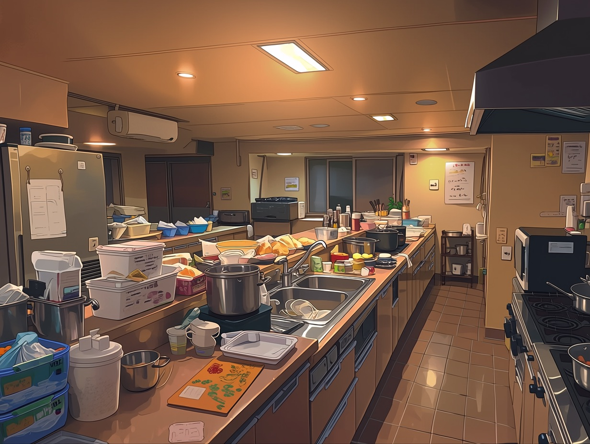
隊員自煮的地方，非常亂。
冰箱裡永遠有其他人昨晚留下來的食物殘骸，凱恩已經放棄要求整理了。
冰箱裡永遠有其他人昨晚留下來的食物殘骸，凱恩已經放棄要求整理了。
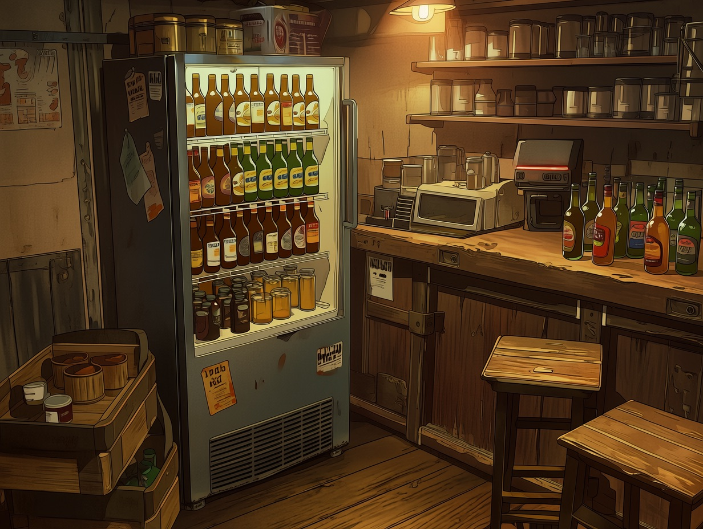
非正式，沒有名字，冰箱永遠塞滿啤酒。照片裡為其中一隅，其實空間非常大。
因為被破壞太多次，凱恩已放棄申請維修，能看出歲月的痕跡。
這裡是任務結束後最多人聚集的地方，也是最多話被說出口又被忘掉的地方。
因為被破壞太多次，凱恩已放棄申請維修，能看出歲月的痕跡。
這裡是任務結束後最多人聚集的地方，也是最多話被說出口又被忘掉的地方。
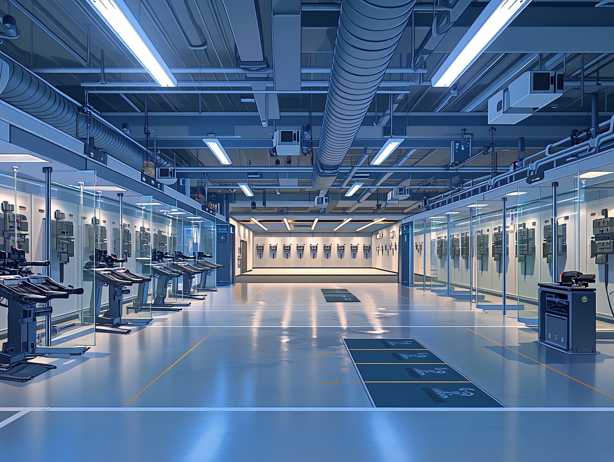
24 小時開放，設有重訓區、格鬥訓練區與體能評測設施。凌晨三點還亮著燈是常態。
凱恩每天早上七點整準時出現，里歐總是在這裡把沙包打破，席奧則不常來。
凱恩每天早上七點整準時出現，里歐總是在這裡把沙包打破，席奧則不常來。
任務前的裝備確認與打包作業在此進行。
每件裝備均有固定編號與歸位規則，違者由凱恩親自盯到改正為止。
每件裝備均有固定編號與歸位規則，違者由凱恩親自盯到改正為止。
日常物資與任務補給品的管理與發放。
不對外，所有物資均透過掩護公司的名義採購。
不對外，所有物資均透過掩護公司的名義採購。
負責所有加密通訊的收發與維護。
任務期間全程待機，訊號一旦中斷，10F 戰情室會立即收到警報。
任務期間全程待機，訊號一旦中斷，10F 戰情室會立即收到警報。
裝備與電子設備的維修保養空間，技術人員常駐。
B9 資料中心的遠端管理也由此層負責。
B9 資料中心的遠端管理也由此層負責。
接待合作單位或上級代表的場所。裝潢刻意維持在「普通顧問公司」的水準，不過份低調也不過份精緻。
3F 以上的存在，訪客永遠不會知道。
3F 以上的存在，訪客永遠不會知道。
對外宣稱的跨國安保顧問公司辦公室，由經過篩選的行政人員實際運作。
這層樓的人大多只知道自己在一間安保公司工作，其他的一概不知。
這層樓的人大多只知道自己在一間安保公司工作，其他的一概不知。
於1970年代建成，經過多次翻修。
外觀保持最新式商業大樓的風格，以掩蓋內部的特殊設施。
外觀保持最新式商業大樓的風格，以掩蓋內部的特殊設施。
對外掩護的公司大廳，訪客的活動範圍止於此。
前台由受過訓練的行政人員駐守，任何試圖深入的人都會被以「樓層管制」為由禮貌地擋下。
前台由受過訓練的行政人員駐守，任何試圖深入的人都會被以「樓層管制」為由禮貌地擋下。
UNDERGROUND · 地下樓層
RESTRICTED ACCESS
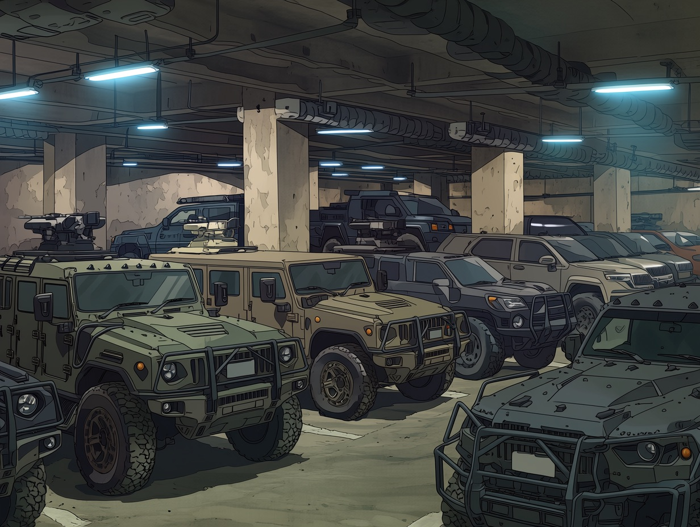
舊停車場同時停放戰術車輛、裝甲車與外觀普通的偽裝民用車。
傑克的悍馬也停在這裡，里歐曾把其中一輛開去買消夜，被凱恩盯了整整一週。 席奧則是喜歡把自己的Porche 911停在新停車場（怕被其他人刮傷）。
傑克的悍馬也停在這裡，里歐曾把其中一輛開去買消夜，被凱恩盯了整整一週。 席奧則是喜歡把自己的Porche 911停在新停車場（怕被其他人刮傷）。
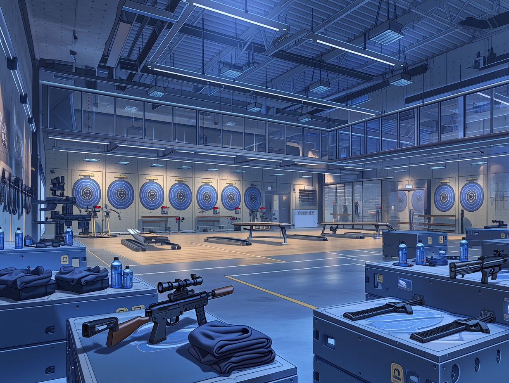
全隔音設計，可同時供多人進行射擊訓練。
支援各型彈藥的彈道測試，靶紙上永遠有不知道是誰留下的彈孔，形狀有時候有點可疑。
傑克跟席奧曾經熱衷於互相比拼槍法，對戰紀錄被保存在靶場的電腦裡。
支援各型彈藥的彈道測試，靶紙上永遠有不知道是誰留下的彈孔，形狀有時候有點可疑。
傑克跟席奧曾經熱衷於互相比拼槍法，對戰紀錄被保存在靶場的電腦裡。
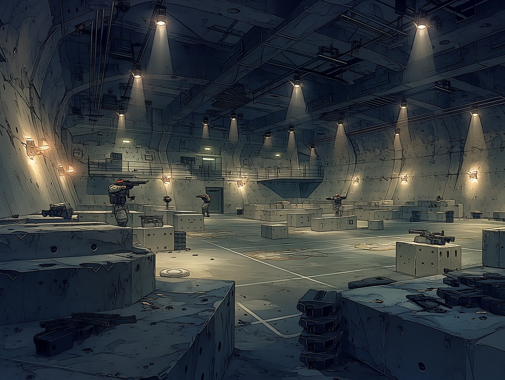
模擬真實城市環境的近距離作戰訓練場，包含街道、建築內部與狹窄通道等地形。
部隊成員最喜歡在這裡一較高下，據說第一任隊長在這裡留下了許多傳奇故事。
部隊成員最喜歡在這裡一較高下，據說第一任隊長在這裡留下了許多傳奇故事。
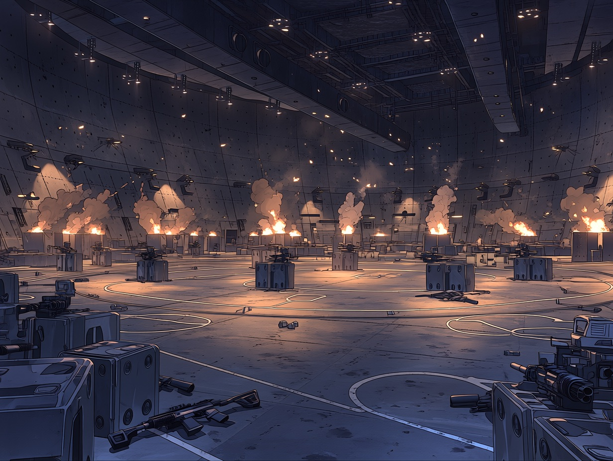
進行爆破物設置、拆解與特殊戰術訓練的專用空間。
里歐在這裡花的時間比在其他地方還多，凱恩對此保持沉默。
里歐在這裡花的時間比在其他地方還多，凱恩對此保持沉默。
存放部隊所有常規武器與彈藥，需 Level 2 以上授權才可進入。
所有武器均已編號建檔，每次取用與歸還皆自動記錄。
所有武器均已編號建檔，每次取用與歸還皆自動記錄。
存放非常規作戰裝備，包含特製爆裂物、電子干擾設備與原型測試裝備。
需 Level 3 授權，目前具備進入資格的只有傑克與凱恩。
需 Level 3 授權，目前具備進入資格的只有傑克與凱恩。
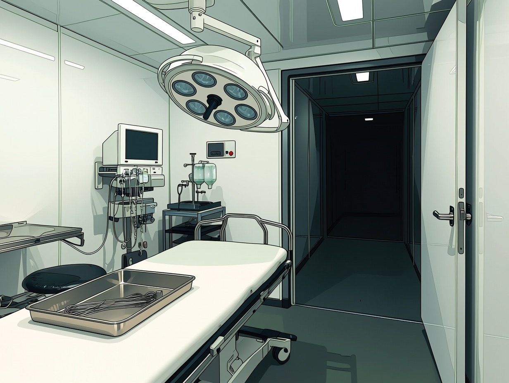
這個舊的醫療室有點可怕。
全新的醫療室配備完整外科手術設備，目前由駐隊醫療人員與醫官負責維護。
全新的醫療室配備完整外科手術設備，目前由駐隊醫療人員與醫官負責維護。
此區域相關資料已列為最高機密。存取需 Level 3 授權，所有進出紀錄自動加密封存。
沒有人主動提起這個地方，或許是怕記起某些難過的回憶吧。
沒有人主動提起這個地方，或許是怕記起某些難過的回憶吧。
儲存所有數位情報與加密通訊紀錄的核心伺服器群，由 4F 技術層遠端管理，非必要不進入。
建築遭滲透時的最終防線，備有獨立電力、糧食與通訊設備。
秘密通道出口位置僅傑克一人知曉，連凱恩也沒有被告知。
秘密通道出口位置僅傑克一人知曉，連凱恩也沒有被告知。
OUTPOST · 境外駐紮地點
LEVEL 3 RESTRICTED
對外以進出口貿易公司為掩護，實際負責區域情報蒐集與聯絡工作。
駐點人員輪班，每三個月換一批。
駐點人員輪班，每三個月換一批。
任務期間供隊員臨時棲身的隱密住所，地點每次任務後更換。
傑克與凱恩曾在此共同執行過為期兩週的境外任務。
傑克與凱恩曾在此共同執行過為期兩週的境外任務。
以商務旅客身份長住，房間內建加密通訊設備。
里歐第一次獨立執行境外任務時曾在此駐紮，據說他把整個房間佈置得「太舒適」，被凱恩念了很久。
里歐第一次獨立執行境外任務時曾在此駐紮，據說他把整個房間佈置得「太舒適」，被凱恩念了很久。
任務用車輛的停放與換牌地點，位於市郊一處不起眼的私人車庫。
車輛均以第三方名義登記，據說以前曾被席奧拿來當私人車庫。
車輛均以第三方名義登記，據說以前曾被席奧拿來當私人車庫。
曾作為高風險任務的臨時指揮所，現已廢棄。
停用原因列為機密。據部分成員透露，████一事與此地點有所關聯，但從未獲得證實。
停用原因列為機密。據部分成員透露，████一事與此地點有所關聯，但從未獲得證實。
OFF-DUTY · 私下活動地點
NON-CLASSIFIED
HALO酒吧
傑克 · 里歐 常客
距離 T-Building 三個街口的小酒吧。調酒師米拉非常健談，傑克跟里歐常在這裡待到半夜。凱恩偶爾來喝一杯。席奧則對廉價酒精不屑一顧。
Bonnie甜點店
里歐 常客
店裡以馬卡龍色系裝潢大受網美喜愛。里歐每週至少去兩次，只為了吃到招牌莓果蛋糕，但打死不讓任何人知道。
舊書店
凱恩 常客
凱恩偶爾會去翻舊書。他不太解釋自己為什麼喜歡那裡，有人說曾經在店裡看到他站半個下午讀完整本書。
某處天台
席奧 · 現已不明
具體位置不詳。離隊前席奧常會去那裡待著，沒有人知道他在那裡做什麼。
Personnel
部隊成員
DOC-NOW-004
部隊正式編列人員。請點擊查看個人檔案。


Related Personnel
相關人員
DOC-NOW-004-B
部隊成員曾經接觸過的相關人員、平民或其他，非部隊正式編制。

DHS
林思若
戰地心理輔導官，隸屬於國土安全局，為部隊成員提供心理評估。
似乎與傑克有曖昧關係?
似乎與傑克有曖昧關係?

DHS
陳玥
國土安全局內勤，凱恩的前女友。
過去曾有過重大任務傷害的紀錄。
過去曾有過重大任務傷害的紀錄。

CIVILIAN
米拉
HALO酒吧調酒師。
氣場強但隨和，處事圓滑世故，非常受部隊成員歡迎。
跟里歐的關係是...?
氣場強但隨和，處事圓滑世故，非常受部隊成員歡迎。
跟里歐的關係是...?

CIVILIAN
林夏羽
18歲的學生，一次任務中被里歐所救。
常來部隊裡探班，是一枚開心果。
常來部隊裡探班，是一枚開心果。

GREY ZONE
維爾
席奧的副手，不苟言笑，完全服從。
常因為席奧做出瘋狂的舉動要幫他擦屁股而感到頭痛。
常因為席奧做出瘋狂的舉動要幫他擦屁股而感到頭痛。

GREY ZONE
莉絲
灰區夜店紅牌，身材姣好、嫉妒心強。
是席奧的...？
是席奧的...？

MAFIA
娜塔
俄羅斯黑手黨首領。
心狠手辣，是席奧少數感興趣的女性。
心狠手辣，是席奧少數感興趣的女性。
LIFE AND GOSSIP
部隊生活
DOC-NOW-005
關於那些沒有記錄在任何正式文件裡的事...
傑克 · 凱恩 · 里歐 · 席奧（4）
2021 · 11 · 31
里歐
有人要吃宵夜嗎
23:12
里歐
要 幫我叫牛肉麵
23:13
凱恩
我不餓。而且你不需要自問自答。
23:13
席奧
我們的隊長好像很忙啊。
23:14
傑克
不用
23:31
里歐
隊長你剛才在幹嘛 過17分才回
23:31
傑克
沒事
23:32
席奧
他在跟凱恩做「學術研究」
23:32
凱恩
並沒有。
23:32
里歐
😮
23:33
2021 · 04 · 03
里歐
我昨晚做了蛋炒飯
08:14
里歐
還有剩 有人要吃嗎
08:14
凱恩
昨晚幾點做的
08:17
里歐
兩點多
08:17
凱恩
不吃。
08:18
席奧
廚房好像很精彩啊。
08:20
里歐
……我等一下去清
08:21
傑克
里歐。廚房。現在。
08:23
里歐
收到😭
08:23
2021 · 06 · 18
里歐
等等 大家停電了嗎
20:03
凱恩
B1 備援電源正常，情報中心沒問題。
20:04
里歐
我房間全黑ㄟ
20:04
席奧
手電筒在武器庫旁邊的櫃子，借一次收費1000。
20:05
里歐
你他媽搶錢啊!!!!!
20:06
傑克
@里歐 時間還早，HALO見敢不敢？
20:07
里歐
哪次不敢 走啊
20:07
傑克
走啊。
20:08
席奧
@傑克 怎麼剛剛還看見你在跟樓下秘書聊天，是我看錯了嗎？呵。
20:08
凱恩
@傑克 你根本沒打算要去吧。
20:09
📍里歐已傳送位置資訊－HALO酒吧
里歐
幹 @傑克 人呢
20:58
2021 · 07 · 22
傑克
裝備確認完畢了嗎？
05:42
凱恩
已檢查完畢。
05:43
傑克
五分鐘後集合
05:44
席奧
收
05:44
里歐
所有人平安回來啊
05:45
傑克
@里歐 什麼時候變得這麼感性了，長大了啊
05:45
2021 · 09 · 07
里歐
請問一個假設性的問題
14:22
里歐
如果一個人喜歡另一個人 但那個人是任務相關的人 這算違規嗎
14:22
凱恩
假設性的。
14:24
里歐
對對 完全假設的
14:24
席奧
看規模。
14:25
里歐
什麼叫看規模
14:25
傑克
不算違規。但你要自己負責後果。
14:31
里歐
謝謝隊長🙏
14:31
凱恩
假設性的問題不需要謝謝
14:32
里歐
對對對 假設的😅
14:32
2021 · 10 · 30
里歐
有人還醒著嗎
02:17
凱恩
怎麼了
02:18
里歐
沒事 睡不著
02:18
席奧
明天六點集訓，這次又想被罰幾圈了？
02:19
里歐
@席奧你少囉唆！我有設鬧鐘！
02:19
席奧
沒記錯的話，你上次、上上次、還有上週也這麼說
02:19
里歐
@傑克 隊長你睡沒
02:20
傑克
值班
02:20
里歐
喔 那你一個人嗎
02:21
傑克
凱恩也在
02:21
里歐
凱恩也在？？那我下去找你們
02:22
凱恩
回去睡。
02:22
里歐
……好吧😔
02:23
2022 · 07 · 01
— 席奧已離開群組 —
— 已讀 3 —
里歐
？？？
14:23
凱恩
說清楚，這樣沒人替補副隊長的職缺。
14:24
傑克
沒什麼好說的。
14:25
里歐
......
16:51
2025 · 02 · 07
凱恩好像有秘密 ✦
— — —
里歐今天突然對凱恩冒出一句「副隊長，你最近笑得比較多。是不是戀愛了。」
凱恩用那張面癱臉，說：「我不知道你在說什麼」
後來，他在旁邊在看報告，但我看到那永遠不會動的嘴唇微微往上了。
這傢伙絕對是在發春。
有夠扯。 ···
凱恩用那張面癱臉，說：「我不知道你在說什麼」
後來，他在旁邊在看報告，但我看到那永遠不會動的嘴唇微微往上了。
這傢伙絕對是在發春。
有夠扯。 ···
♡
2025 · 12 · 31
不在計畫裡的事
— — —
今天的任務提前結束了。原本應該直接回基地，但繞了點路。
不知道為什麼，只是想在回去之前多晃個幾圈。街上的燈都亮著，路上有賣宵夜的攤子，有情侶在牽手。
偶爾我會想，如果她也在這就好了。 ···
不知道為什麼，只是想在回去之前多晃個幾圈。街上的燈都亮著，路上有賣宵夜的攤子，有情侶在牽手。
偶爾我會想，如果她也在這就好了。 ···
♡
變化
習慣或許是最難釋懷的。
傑克又去了頂樓天台待了整晚。
從那天開始，他頻繁出入國土安全局向上層交代，回來後埋頭訓練、看報告、開審查會議，連HALO都不去了。
我知道他把一切怪罪在自己身上。
那件事成了他心裡的結，解不開也放不下。
但我覺得他應該放過自己了。
傑克又去了頂樓天台待了整晚。
從那天開始，他頻繁出入國土安全局向上層交代，回來後埋頭訓練、看報告、開審查會議，連HALO都不去了。
我知道他把一切怪罪在自己身上。
那件事成了他心裡的結，解不開也放不下。
但我覺得他應該放過自己了。
效率問題
里歐今天訓練遲到了11分鐘。
原因：手機沒充電，鬧鐘沒響，宿醉。
我已經告訴他第245次了。
下次我不打算再說。
原因：手機沒充電，鬧鐘沒響，宿醉。
我已經告訴他第245次了。
下次我不打算再說。
🐰
2025 · 03 · 14
今天也是平靜的一天
沒有任務 難得的休息日
早上訓練 下午去Bonnie吃了四塊蛋糕 晚上太無聊煮了火鍋差點把餐廳炸了 哈哈哈哈
下個刺青要刺在哪裡好呢
早上訓練 下午去Bonnie吃了四塊蛋糕 晚上太無聊煮了火鍋差點把餐廳炸了 哈哈哈哈
下個刺青要刺在哪裡好呢
🐰
2024 · 12 · 06
凱恩說我遲到了
才11分鐘而已！！操！
而且我有原因的好嗎 手機沒電這種事任何人都會發生
說什麼「你已經犯了第 245 次了」 最好是有這麼誇張！！
我決定今晚設10個鬧鐘 就不信這樣還會遲到
明天再被罰我就是狗！
而且我有原因的好嗎 手機沒電這種事任何人都會發生
說什麼「你已經犯了第 245 次了」 最好是有這麼誇張！！
我決定今晚設10個鬧鐘 就不信這樣還會遲到
明天再被罰我就是狗！
2022 · 07 · 01
最後一頁
決定了。
████████████████████
██████████走到一半才發現██████
傑克說████，真可笑。
沒什麼好說的。
現在要回頭已經太遠了。
████████████████████
██████████走到一半才發現██████
傑克說████，真可笑。
沒什麼好說的。
現在要回頭已經太遠了。
2021 · 06 · 06
無題
今天天氣不錯。
里歐那隻瘋狗說幫我慶生？還買了蛋糕。
廉價的奶油真的很配休息室那種破爛地方。
其實 ███████
里歐那隻瘋狗說幫我慶生？還買了蛋糕。
廉價的奶油真的很配休息室那種破爛地方。
其實 ███████
MISSION LOG // OWL-0021
DELETED
任務地點：[已銷毀]
目標：[已銷毀]
執行人員：[已銷毀]
已於於 Level 4 文件庫中銷毀。
MISSION LOG // OWL-0012
COMPLETE
代號「黑羽」
任務地點：[已加密]
目標：高價值情報取得
執行人員：傑克、凱恩
任務歷時 72 小時，目標達成，無人員損傷。詳細報告封存於 Level 4 文件庫。
MISSION LOG // OWL-0019
CLASSIFIED
代號「靜夜」
任務地點：[已加密]
目標：[已加密]
執行人員：[已加密]
此任務相關所有資料均已列為最高機密，任何未授權的讀取行為將自動觸發系統警報。
目標：[已加密]
執行人員：[已加密]
此任務相關所有資料均已列為最高機密，任何未授權的讀取行為將自動觸發系統警報。